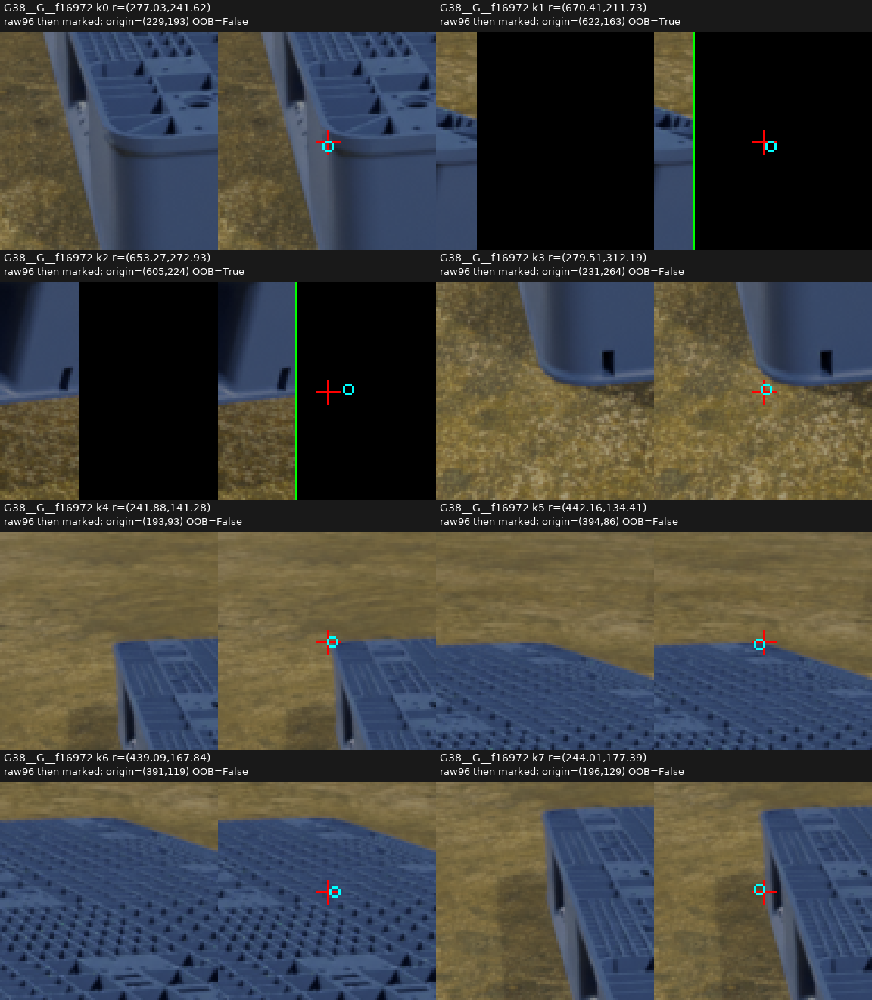
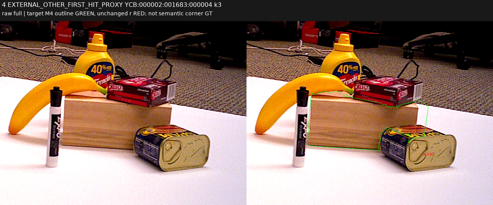
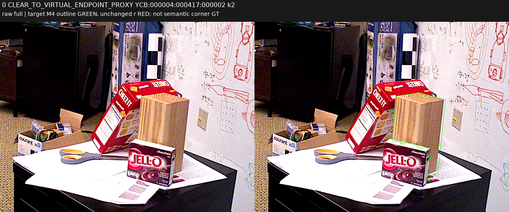

공개 실사 · 합성 / source-only 진단과 외부 가림 head
외부 ray 가림과 모서리 보임의 정의를 구분했습니다
공개 ray 기준 미달 · 현재 평가셋으로 진행하지 않음
현재 223장은 직접 촬영했고 KU Leuven 데이터와 원본을 공유하지 않는다는 답변을 기록했습니다. 이 단계의 학습·문턱·체크포인트 선택에는 사용하지 않았고 PnP도 변경하지 않았습니다.
새 head의 공개 검증 결과
합성 G38/P0/TEX로 사전학습한 공유 특징을 재사용하고, V87의 단일 ray 외부 물체 라벨로 YCB-V만 추가 학습했습니다. 합성의 기존 다중 ray 가림률을 같은 정답처럼 섞지 않았습니다. forward에는 RGB·P3·초기 query context의 6개 입력만 들어갑니다.
표는 teacher-known 전체를 포함하며, 정답 기준점이 초기 crop 밖인 실패도 분모에 남겼습니다. 학습에 들어간 조건부 결과·기준점 이탈·자기 가림 proxy별 결과와 teacher-U 전체 수는 상세 수치에 있습니다. Teacher-U는 모델의 올바른 보류로 계산하지 않습니다.
YCB sourceVAL은 반복 개발에 사용된 자료이며 독립 최종 일반화 평가가 아닙니다. 공개 query도 합성 TRAIN 오차 분포로 만든 고정 입력이어서 실제 초기 검출기의 출력과는 다릅니다. 이 출력은 단일 ray 외부 가림 proxy이고, clear를 보이는 물리 모서리 D로 바꿔 부르지 않습니다. 현재223 평가 진입은 허용하지 않았습니다.
좌표가 맞아도 정의 때문에 판정이 달라집니다
합성 원래 24점에서 관찰된 구조 단서 10개 중 8개는 정확한 r 픽셀의 M0=M4가 0이었습니다. 반면 뒤쪽 기준점이 자기 팔레트의 보이는 윗면 위에 투영되기도 했습니다. 주변 target support, 점의 pixel membership, 해당 모서리의 보임은 각각 다른 목표입니다. 이 사례들은 현재 평가셋 v61 FN을 새로 골라 본 결과나 인간 gold가 아닙니다.

합성 실제 원본 crop. 각 슬롯은 raw / 표시본 순서. 빨강 r, 청록 초기 q. k3·k4 주변 단서와 픽셀 소속 차이, k6의 보이는 윗면과 뒤 기준점 구분.정의 차이 진단과 한계
공개 실사에서 외부 가림과 clear의 차이

대상은 녹색 윤곽의 목재 block. 고정 r는 앞의 별도 캔 금속면에 놓임: foreign first hit 근거.
고정 r는 목재 옆 배경에 놓임. ray가 비어 있다는 라벨은 물리 모서리가 보인다는 라벨과 다름.깊이 1,000장과 모든 visible instance mask 4,200장을 별도 코드로 다시 읽어 33,600개 라벨·사유·소유 대상·무효 처리의 정확한 일치를 확인했습니다. 자기 물체 먼저 닿음, band, depth 부재, 소유권 없음·겹침, 화면 밖은 모두 별도 U로 보존했습니다.
전행 독립 감사 · 고정 8사유 실제 crop
공개 팔레트 50쌍의 물리 단서 기록
새 49쌍은 before RGB에서 6개 view-relative 슬롯의 좌표와 불확실 영역을 고정한 뒤 after의 같은 영역을 확인했습니다. 원래 단서를 정할 수 없던 점은 after에서 보이더라도 U로 남겼습니다. 기존 seed 1쌍의 8개 원제안·6개 연결된 물리 영역은 따로 보존했습니다.
독립 secondary 검토는 사전에 고른 5쌍·30슬롯입니다. 단서 정체가 불명확했던 VAL의 2개는 기존 제안대로 U로 남겼습니다. 두 독립 AI 검토자가 검토한 범위는 사전 지정 5쌍입니다. 한 물리 bin이며 native virtual8 대응이나 인간 정답을 추가한 자료도 아닙니다.
분할별 수치·라벨 대응·계보 · 기존20쌍의 source crop 포함 여부
좌표 오차가 작은 공개 실패도 남았습니다
공개 VAL에서 고정 r가 초기 crop 안에 있고 입력이 유효하며 q-r 오차가 3px 이하인 teacher-known 1538개입니다. 현재 평가셋의 수동 좌표 오차 집합과는 다른 source 집합입니다.
정의 차이를 구분해도 분류 실패가 남습니다. 이 수치만으로 합성→실사의 색상 전이, 대상 소유권 혼동, RGB에서의 관측 한계 중 하나를 단독 원인으로 확정하지 않습니다. 고정 minSHA 규칙으로 고른 6개 실제 crop과 관찰 한계를 보존했습니다.
실제 6개 crop 관찰과 계보 · 실제 model-input crop 연락표
물리 단서 보조 입력의 기하 준비
공개 50쌍·100 frame 전체에 이미지 크기만으로 정한 고정 격자 12,900개를 만들었습니다. L=128/256, stride=L/2이며 모든 원본 분할과 seed를 유지했습니다. 입력 manifest를 먼저 봉인한 뒤, 정답과의 영역 포함 관계 77,916개를 별도 파일에서 확인했습니다.
좌표가 있는 단서들은 적어도 한 grid window에 완전히 포함됩니다. 이는 영역 포함 검사이며 실제 관측 가능성이나 학습 성능을 보장하지 않습니다. native8 ID나 context42를 생성하지 않았고 RGB crop·P3 tensor도 아직 추출하지 않았습니다. 앞으로 공간 보조학습에 사용할 수 있는 메타데이터·기하 준비입니다.
확인된 기존 Pallox feature cache는 8개 query ROI만 저장하고 있어 임의의 새 grid로 재사용할 수 없습니다. 다음 실제 입력 준비에는 고정한 producer로 공개 100장의 full-frame feature를 추출하는 단계가 필요합니다.
전체 포함 관계·U·계보 요약 · 기존 feature 재사용 가능성
남은 작업
목표 차이는 실제 source crop에서 확인됐지만 실사 전이 실패가 모두 해소됐다는 증거는 아닙니다. 외부 ray component의 성적을 보존하고, 물리 단서 보조 감독에 필요한 GT 비의존 공간 입력과 native 기준점 대응을 구분해 진행해야 합니다. 작은 실제 crop에 단서가 들어오지 않는 문제를 GT로 재중심화하거나 모델 보류 성공으로 숨기지 않습니다.
목표는 계속 진행 중이며 아직 해결 완료로 표시하지 않았습니다. 마지막 실제 현재223 평가는 V76이고 이 단계에서는 새 현재 평가를 실행하지 않았습니다.
결과·다음 결정 JSON · 실행 전 고정 프로토콜 · 학습 결과 독립 감사